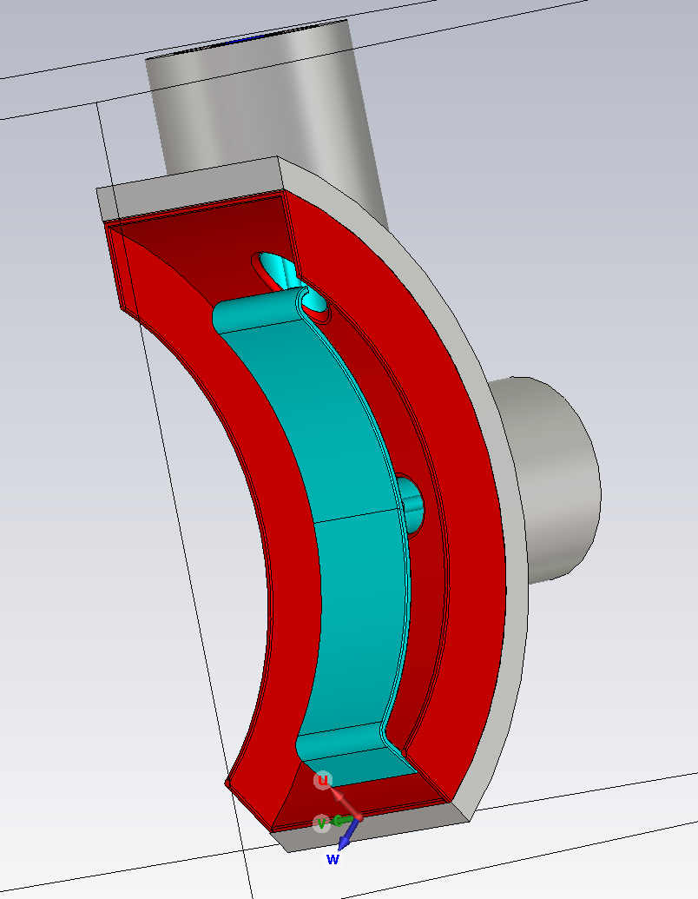
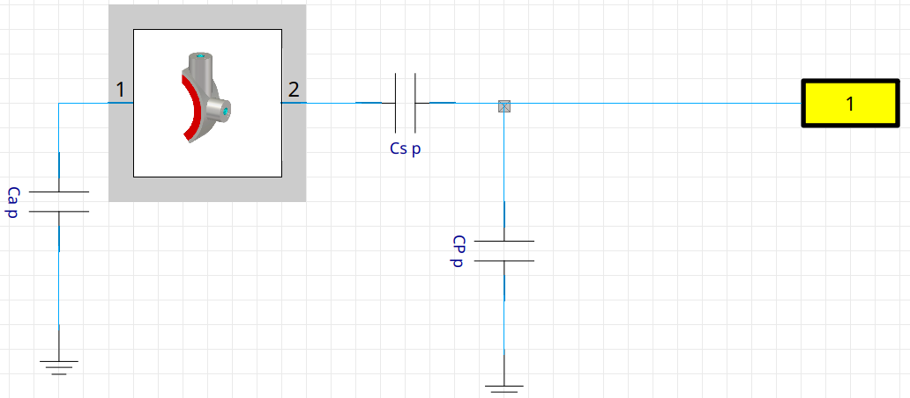

TOMAS ICRH matching¶
As a full project example we’ll now use this code to test the matching algorithm that will be implemented for the ICRH antenna in TOMAS, a model of the antenna and a diagram of how it is connected is shown below:
 To implement the antenna, we can make use of it’s touchstone file